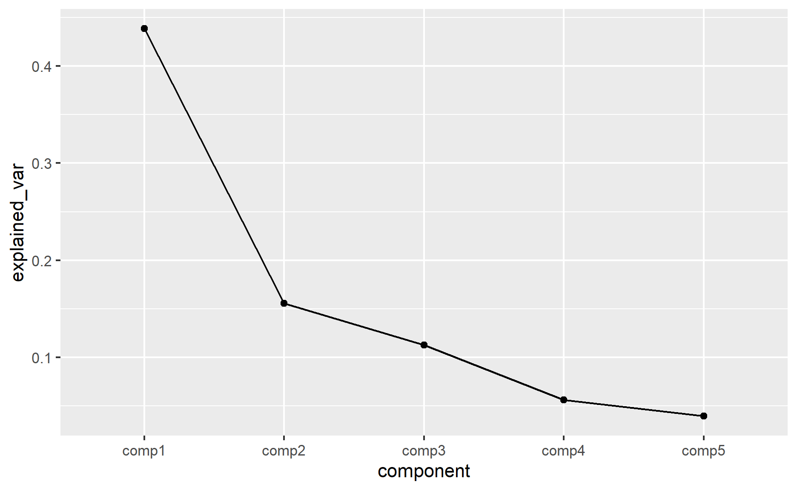
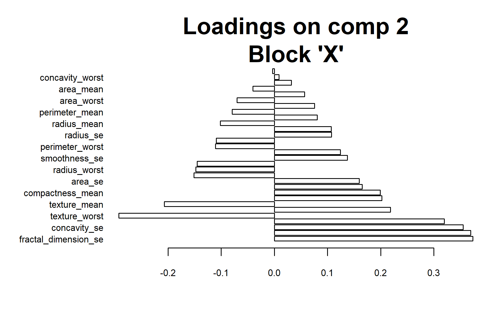
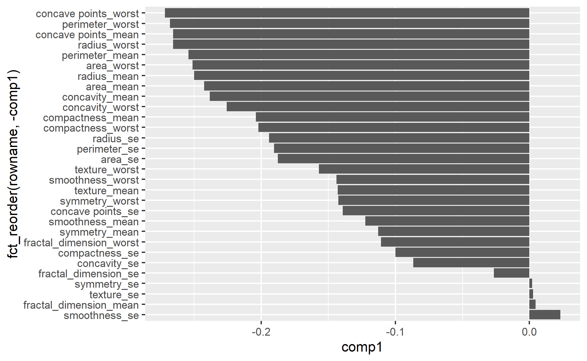
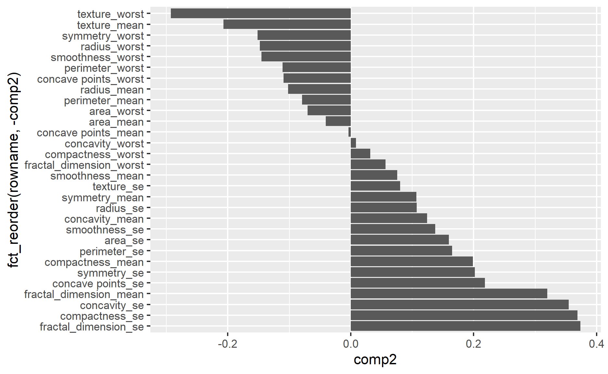
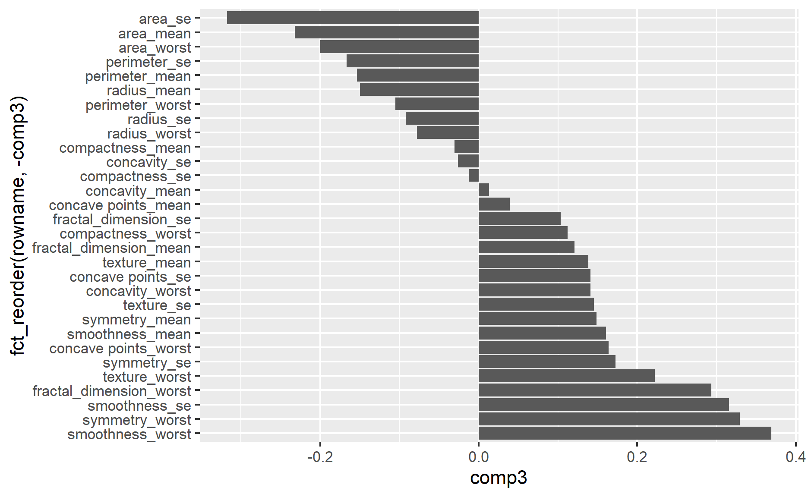
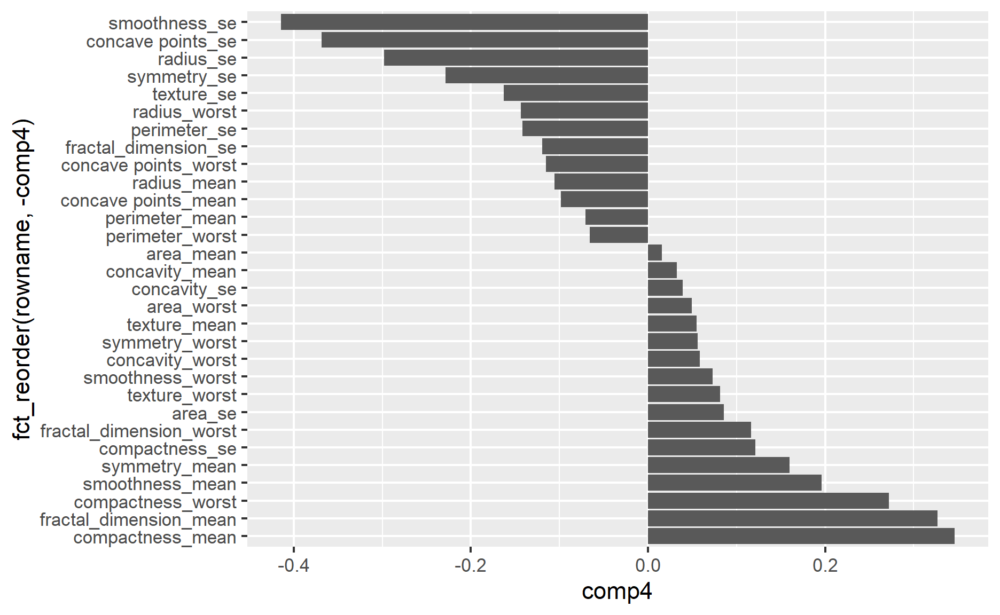
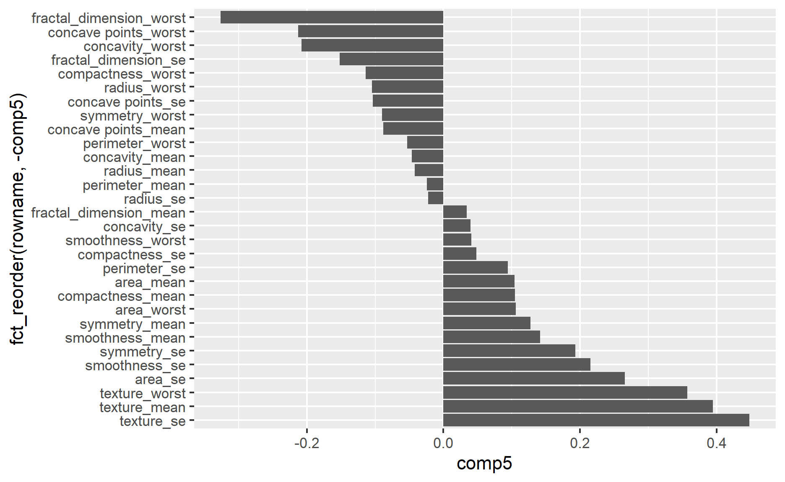
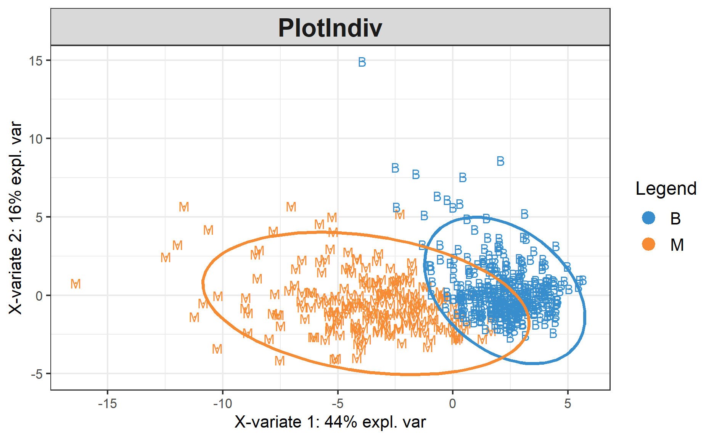
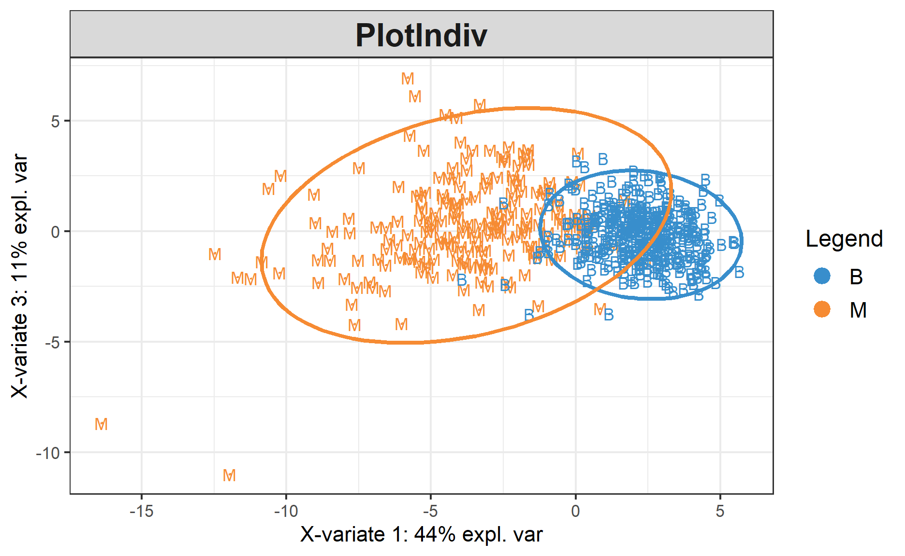
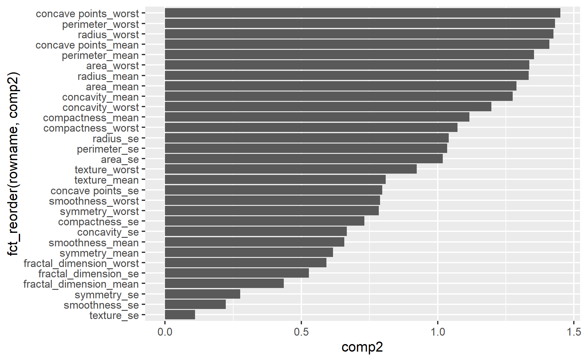

Why did the partially blind man fall into the well? He couldn’t see that well.
Photo by Nataliya Vaitkevich
Recently I was reading on how to perform dimensionality reduction, I happened to come across this technique called partial least square.
Before jumping into the concept for partial least square, let’s understand the issue of high dimensional data.
High dimensional data issue happens when n (i.e., number of observations) \(\ll\) p (i.e., number of features).
The model is likely to overfit the data when this issue occurs. This would result in a poor performing model.
To overcome this, we could use dimension reduction techniques.
This approach first identifies a new set of features \(Z_{1}\), …, \(Z_{M}\) that are linear combinations of the original features and then fits a linear model using these M new features (James et al. 2021).
In other word, it reduces the dimensions in explaining the target variable.
The issue with PCR is its a unsupervised learning method. There is no guarantee that the directions that best explain the predictors will also be the best directions to use for predicting the response (James et al. 2021).
In this demonstration, I will be using mixOmics package in performing principal component analysis.
As the package is hosted on BiocManager, instead of R CRAN, so we need to install the package through BiocManager. Below is the code on how to do so.
# if (!require("BiocManager", quietly = TRUE))
# install.packages("BiocManager")
#
# BiocManager::install("mixOmics")Once the package is successfully installed, I will call all the necessary packages.
pacman::p_load(tidyverse, tidymodels, mixOmics, plsmod)
tidymodels_prefer()Note that we need to call additional package, plsmod so that we could use tidymodels packages to build PLS model.
First, I will import the data into the environment.
Okay, now let’s build the model!
tidymodels packageFirst, I will define the model recipe.
general_recipe <-
recipe(diagnosis ~ ., data = df) %>%
step_zv(all_predictors()) %>%
step_normalize(all_numeric_predictors())Next, I will define the model specification.
pls_spec <-
pls(num_comp = 5) %>%
set_mode("classification") %>%
set_engine("mixOmics")Then, I will define the model workflow.
pls_wf <-
workflow() %>%
add_recipe(general_recipe) %>%
add_model(pls_spec)For simplicity, I will just fit the model without tuning any parameters.
pls_fit <-
pls_wf %>%
fit(data = df)We could call the fitted object to check the model details.
pls_fit══ Workflow [trained] ════════════════════════════════════════════════
Preprocessor: Recipe
Model: pls()
── Preprocessor ──────────────────────────────────────────────────────
2 Recipe Steps
• step_zv()
• step_normalize()
── Model ─────────────────────────────────────────────────────────────
Call:
mixOmics::splsda(X = x, Y = y, ncomp = ncomp, keepX = keepX)
sPLS-DA (regression mode) with 5 sPLS-DA components.
You entered data X of dimensions: 568 30
You entered data Y with 2 classes.
Selection of [30] [30] [30] [30] [30] variables on each of the sPLS-DA components on the X data set.
No Y variables can be selected.
Main numerical outputs:
--------------------
loading vectors: see object$loadings
variates: see object$variates
variable names: see object$names
Functions to visualise samples:
--------------------
plotIndiv, plotArrow, cim
Functions to visualise variables:
--------------------
plotVar, plotLoadings, network, cim
Other functions:
--------------------
selectVar, tune, perf, auc Different model performance functions can be used in extracting the model performance.
augment(pls_fit, df) %>%
mutate(diagnosis = factor(diagnosis)) %>%
roc_auc(truth = diagnosis
,.pred_B)# A tibble: 1 × 3
.metric .estimator .estimate
<chr> <chr> <dbl>
1 roc_auc binary 0.992One of the important things to check is the how much variance is being explained by different components.
This would help us to determine the number of components should we choose to explain “bulk” of the variance.
This can be done by directly extracted from the fitted object.
as.data.frame(pls_fit$fit$fit$fit$prop_expl_var$X) %>%
rownames_to_column() %>%
rename(explained_var = `pls_fit$fit$fit$fit$prop_expl_var$X`
,component = rowname) %>%
ggplot(aes(component, explained_var)) +
geom_point() +
geom_line(aes(group = 1))
Another way to extract the variance explained by different variates as shown below.
explained_variance(pls_fit$fit$fit$fit$X, pls_fit$fit$fit$fit$variates$X, ncomp = 5) comp1 comp2 comp3 comp4 comp5
0.43872371 0.15537640 0.11282588 0.05592861 0.03928883 To extract the numeric loadings
pls_fit$fit$fit$fit$loadings$X
comp1 comp2 comp3
radius_mean -0.249988930 -0.102022944 -0.14971074
texture_mean -0.142998995 -0.206870327 0.13819206
perimeter_mean -0.254322693 -0.079436865 -0.15335021
area_mean -0.242660725 -0.040570922 -0.23200367
smoothness_mean -0.122445022 0.075553976 0.16089533
compactness_mean -0.204076418 0.198984519 -0.03015350
concavity_mean -0.238316496 0.124168524 0.01295069
concave points_mean -0.265855355 -0.003621104 0.03947083
symmetry_mean -0.112914955 0.106715931 0.14880189
fractal_dimension_mean 0.004660245 0.319514503 0.12101006
radius_se -0.194269015 0.107440707 -0.09191844
texture_se 0.002667013 0.080541365 0.14568200
perimeter_se -0.190465552 0.164904209 -0.16647769
area_se -0.187645622 0.159487858 -0.31729953
smoothness_se 0.022936893 0.137297652 0.31563547
compactness_se -0.099960330 0.368946648 -0.01253268
concavity_se -0.086521851 0.354824086 -0.02610295
concave points_se -0.139356349 0.218320981 0.14096781
symmetry_se 0.001885381 0.201994178 0.17269728
fractal_dimension_se -0.026538974 0.373399291 0.10359370
radius_worst -0.265824564 -0.147951178 -0.07773050
texture_worst -0.156971460 -0.292640585 0.22233570
perimeter_worst -0.268046318 -0.111090390 -0.10486072
area_worst -0.251165452 -0.070149240 -0.19974876
smoothness_worst -0.143969012 -0.145484942 0.36899419
compactness_worst -0.202175219 0.031724711 0.11229672
concavity_worst -0.225715479 0.008609710 0.14131478
concave points_worst -0.271795274 -0.109301374 0.16407067
symmetry_worst -0.142600926 -0.151627498 0.32961973
fractal_dimension_worst -0.110664882 0.056817823 0.29360828
comp4 comp5
radius_mean -0.10586412 -0.04185370
texture_mean 0.05504236 0.39497579
perimeter_mean -0.07040630 -0.02396280
area_mean 0.01560399 0.10411720
smoothness_mean 0.19574602 0.14184551
compactness_mean 0.34588130 0.10485155
concavity_mean 0.03255614 -0.04659615
concave points_mean -0.09817744 -0.08791775
symmetry_mean 0.15975956 0.12723047
fractal_dimension_mean 0.32683694 0.03416983
radius_se -0.29772095 -0.02220704
texture_se -0.16299341 0.44795359
perimeter_se -0.14159010 0.09415240
area_se 0.08569429 0.26586413
smoothness_se -0.41430086 0.21516375
compactness_se 0.12096926 0.04830424
concavity_se 0.03939258 0.03939612
concave points_se -0.36858347 -0.10349046
symmetry_se -0.22875173 0.19308781
fractal_dimension_se -0.11960788 -0.15198799
radius_worst -0.14376613 -0.10498930
texture_worst 0.08130599 0.35699153
perimeter_worst -0.06593622 -0.05307956
area_worst 0.04955829 0.10586749
smoothness_worst 0.07304700 0.04083554
compactness_worst 0.27180939 -0.11394181
concavity_worst 0.05818544 -0.20817878
concave points_worst -0.11548851 -0.21301334
symmetry_worst 0.05606019 -0.08977001
fractal_dimension_worst 0.11614363 -0.32644524
$Y
comp1 comp2 comp3 comp4 comp5
B 0.7071068 0.7071068 -0.7071068 0.7071068 0.7071068
M -0.7071068 -0.7071068 0.7071068 -0.7071068 -0.7071068We can use plotLoadings function to visualize how the different variates affect the components.
plotLoadings(pls_fit$fit$fit$fit, comp = 2)
I prefer using ggplot function to visualize the results so that it gives me the flexibility to modify the graphs.
var_list <- c("comp1", "comp2", "comp3", "comp4", "comp5")
for(i in var_list){
print(
pls_fit$fit$fit$fit$loadings$X %>%
as.data.frame() %>%
rownames_to_column() %>%
ggplot(aes(!!sym(i), fct_reorder(rowname, -!!sym(i))
)) +
geom_col()
)
}
The package also provides function (i.e., plotIndiv function) to show the scatter plots for individuals (experimental units) representation in PLS.
plotIndiv(pls_fit$fit$fit$fit, ind.names = df$diagnosis, legend = TRUE, ellipse =TRUE)
We could change the components by passing the components numbers into comp argument.
It seems like this argument can only accept two components.
plotIndiv(pls_fit$fit$fit$fit, comp = c(1, 3),ind.names = df$diagnosis, legend = TRUE, ellipse =TRUE)
The package also offers functions to compute the variable importance in the projection.
vip(pls_fit$fit$fit$fit) %>%
as.data.frame() %>%
rownames_to_column() rowname comp1 comp2 comp3 comp4
1 radius_mean 1.36924576 1.3334337 1.3245912 1.3154567
2 texture_mean 0.78323775 0.8093127 0.8082341 0.8022972
3 perimeter_mean 1.39298276 1.3534899 1.3446149 1.3340828
4 area_mean 1.32910753 1.2884734 1.2880989 1.2771499
5 smoothness_mean 0.67065901 0.6576707 0.6632083 0.6722435
6 compactness_mean 1.11777258 1.1160653 1.1044016 1.1224918
7 concavity_mean 1.30531321 1.2755210 1.2619332 1.2513750
8 concave points_mean 1.45614975 1.4103393 1.3956244 1.3854842
9 symmetry_mean 0.61846068 0.6164119 0.6212947 0.6264685
10 fractal_dimension_mean 0.02552521 0.4362561 0.4422807 0.4967643
11 radius_se 1.06405522 1.0409289 1.0324184 1.0454556
12 texture_se 0.01460783 0.1107000 0.1597772 0.1965859
13 perimeter_se 1.04322279 1.0351009 1.0326337 1.0287991
14 area_se 1.02777740 1.0189028 1.0393749 1.0323167
15 smoothness_se 0.12563054 0.2232368 0.3351266 0.4449201
16 compactness_se 0.54750527 0.7308507 0.7231101 0.7221233
17 concavity_se 0.47389970 0.6668016 0.6600055 0.6549750
18 concave points_se 0.76328616 0.7969254 0.7964059 0.8323311
19 symmetry_se 0.01032666 0.2755356 0.3054929 0.3441373
20 fractal_dimension_se 0.14535995 0.5281208 0.5289862 0.5313811
21 radius_worst 1.45598110 1.4245168 1.4106609 1.4023808
22 texture_worst 0.85976810 0.9233373 0.9305663 0.9244468
23 perimeter_worst 1.46815015 1.4299945 1.4171899 1.4058790
24 area_worst 1.37568984 1.3358296 1.3311471 1.3202565
25 smoothness_worst 0.78855075 0.7890676 0.8344001 0.8289195
26 compactness_worst 1.10735928 1.0733867 1.0656964 1.0742830
27 concavity_worst 1.23629460 1.1974509 1.1900180 1.1805894
28 concave points_worst 1.48868403 1.4495193 1.4400030 1.4300891
29 symmetry_worst 0.78105744 0.7842104 0.8192691 0.8132605
30 fractal_dimension_worst 0.60613652 0.5921511 0.6310034 0.6310911
comp5
1 1.3051689
2 0.8417482
3 1.3234258
4 1.2689083
5 0.6740540
6 1.1158144
7 1.2417021
8 1.3756630
9 0.6276622
10 0.4933278
11 1.0371369
12 0.3670881
13 1.0225917
14 1.0404937
15 0.4659288
16 0.7170829
17 0.6502670
18 0.8287378
19 0.3667419
20 0.5375539
21 1.3929768
22 0.9498966
23 1.3950251
24 1.3116676
25 0.8227216
26 1.0685495
27 1.1799520
28 1.4262417
29 0.8091044
30 0.6657676For illustration, I have illustrated the variable importance under component two.
vip(pls_fit$fit$fit$fit) %>%
as.data.frame() %>%
rownames_to_column() %>%
ggplot(aes(comp2, fct_reorder(rowname, comp2)
)) +
geom_col()
From this discussion post on the variable importance and loading, it seems like we should use loading vector since the model is using sparse method where variable selection is performed.
mixOmics packageAlternatively, we can fit the model directly using mixOmics package.
First, I will define the X & Y.
X <- df %>%
select(-diagnosis) %>%
as.matrix()
Y <- df$diagnosisThen, I will use splsda function to fit a PLS model.
omics_fit <-
splsda(X, Y, scale = TRUE, ncomp = 5)The rest of analysis is the same as above.
That’s all for the day!
Thanks for reading the post until the end.
Feel free to contact me through email or LinkedIn if you have any suggestions on future topics to share.
Refer to this link for the blog disclaimer.
Till next time, happy learning!
Photo by Nataliya Vaitkevich